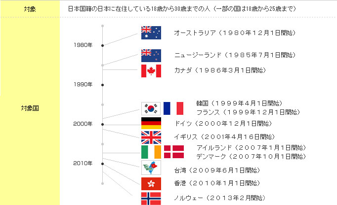
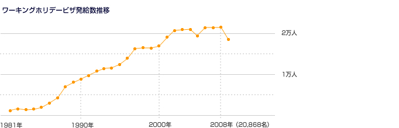

<?php

require_once 'include/header.php';
require_once 'include/links.php';
$links_obj = new Links();

$header_obj = new Header();
    
$header_obj->fncFacebookMeta_function=true;

$header_obj->title_page='ワーキング・ホリデー制度について';
$header_obj->description_page='ワーキングホリデー（ワーホリ）協定国の最新のビザ取得方法や渡航情報などを発信しています。また、ワーキングホリデー（ワーホリ）をされる方向けの各種無料セミナーを開催しています。オーストラリア、ニュージーランド、カナダ、韓国、フランス、ドイツ、イギリス、アイルランド、デンマーク、台湾、香港でワーキングホリデー（ワーホリ）ビザの取得が可能です。ワーキングホリデー（ワーホリ）ビザ以外に学生ビザでの留学などもお手伝い可能です。';

$header_obj->fncMenuHead_imghtml = '';
$header_obj->fncMenuHead_h1text = 'ワーキングホリデー制度について';

$header_obj->display_header();
include('calendar_module/mod_event_horizontal.php');
?>
    <div id="maincontent">
	  <?php echo $header_obj->breadcrumbs(); ?>
	  <h2 class="sec-title">ワーキングホリデー（ワーホリ）制度について</h2>
	  <p class="text01">ワーキング・ホリデー制度とは，二つの国・地域間の取り決め等に基づき，各々の国・地域が，相手国・地域の青少年に対して自国・地域の文化や一般的な生活様式を理解する機会を提供するため，自国・地域において一定期間の休暇を過ごす活動とその間の滞在費を補うための就労を相互に認める制度です。

　我が国のワーキング・ホリデー制度は，1980年にオーストラリアとの間で開始されたことに始まり，1985年にニュージーランド，1986年にカナダとの間で開始されました。

　その後，1999年4月から韓国，同年12月からフランス，2000年12月からドイツ，2001年4月から英国，2007年1月からアイルランド，同年10月からデンマーク，2009年6月から台湾，2010年1月から香港との間で開始されました。更に，最近では2013年2月からノルウェーとの間で開始されています。（外務省ホームページより）
</p>

 <p class="text01">
 ワーキングホリデー（ワーホリ）ビザは観光ビザ、留学、学生ビザ、就労ビザとは異なった若者限定の特別なビザです。どこに滞在しても、どこを旅行しても、仕事をしても、語学学校に通っても良いという素晴らしい自由度の高いビザです。　制度の趣旨として仕事を主たる目的とすることはできませんが現地で海外でバイトができるビザは他にはあまりないです。　英語の勉強をしたいけど留学は高すぎるからと諦めていた方には大変有効なビザです。留学の半額以下の料金で海外で滞在しながら勉強してバイトも出来る素晴らしいビザがワーキングホリデー（ワーホリ）ビザです。　一生に一度のチャンスなので絶対に活用してください。
 </p>

	<p class="text01">
		【申請手続き】
	</p>
	<p class="text01" style="margin-left:20px; margin-top:-6px;">
		日本人の方がワーキング・ホリデー査証の発給を受けるためには、日本にある先方政府の大使館又は領事館等に対して申請を行う必要があります。
		詳細は、<a href="visa/visa_top.html">ワーキング・ホリデー協定国のページ</a>をご確認下さい。<br/>
		しかし、大使館では1人1人のワーキングホリデービザ取得のサポートまではできません。そこで日本ワーキングホリデー協会でワーキングホリデービザ取得サポートを行っております。<br/>
		また、日本へ渡航を希望する相手国・地域の方は、当該相手国・地域にある日本政府の大使館又は領事館に対して申請を行うことが必要です（台湾については財団法人交流協会にお問い合わせ下さい。）
	</p>

	<p class="text01">
		【まずは無料セミナーにご参加ください】
	</p>
	<p class="text01" style="margin-left:20px; margin-top:-6px;">
		日本ワーキングホリデー協会では、東京・大阪・名古屋・福岡・沖縄の各オフィスで<br />
		<a href="/seminar/seminar/">留学・ワーキングホリデーセミナー（参加無料）</a>を開催しています。
		ワーキングホリデーの仕組み、ワーキングホリデービザの適切な使い方・取得方法、留学・ワーホリ先のご案内など、色々なセミナーを開催しています。<br />
		まずは、「初心者向けセミナー」にご予約の上、ご参加ください。<br />
		気になるセミナーをクリックしてくださいね。
      <?php 
		//settings for the calendar module display
		$country_to_display = '';
		$number_to_display = '4';
		$start_display_from = '';
		$title_name = '初心者';
		display_horizontal_calendar($country_to_display,$number_to_display,$start_display_from,$title_name);            
      ?>
	</p>

<p>&nbsp;</p>
	  
<p>&nbsp;</p>


<p>&nbsp;<br /><br /></p>

<?php $links_obj->display_links(); ?>


	<h3 class="osusume_seminar_title_list">おススメの無料セミナー情報</h3>
      <?php 
		//settings for the calendar module display
		$country_to_display = '';
		$number_to_display = '4';
		$start_display_from = '4';
		$title_name = '初心者';
		display_horizontal_calendar($country_to_display,$number_to_display,$start_display_from,$title_name);            
      ?>
	<span class="bottom_osusume_seminar">★★★　留学・ワーホリの無料セミナー連日開催中！！　気になるセミナーをクリック！！　★★★</span>
	  <div class="advbox03">
      
<?php
	// 101
  define('MAX_PATH', '/var/www/html/ad');
  if (@include_once(MAX_PATH . '/www/delivery/alocal.php')) {
    if (!isset($phpAds_context)) {
      $phpAds_context = array();
    }
    // function view_local($what, $zoneid=0, $campaignid=0, $bannerid=0, $target='', $source='', $withtext='', $context='', $charset='')
    $phpAds_raw = view_local('', 84, 0, 0, '', '', '0', $phpAds_context, '');
  }
  echo $phpAds_raw['html'];
?></div>
	</div>
  </div>
  </div>

<?php fncMenuFooter($header_obj->footer_type); ?>

</body>
</html>